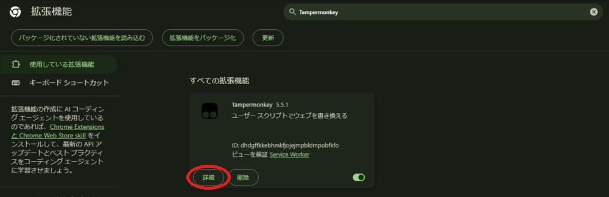
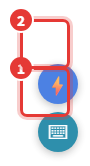
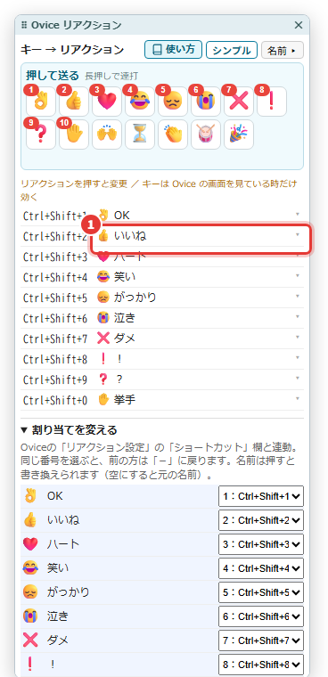
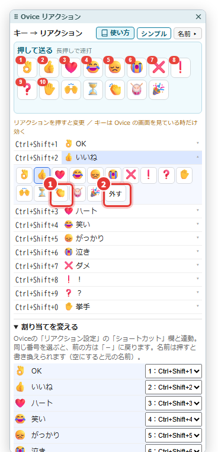
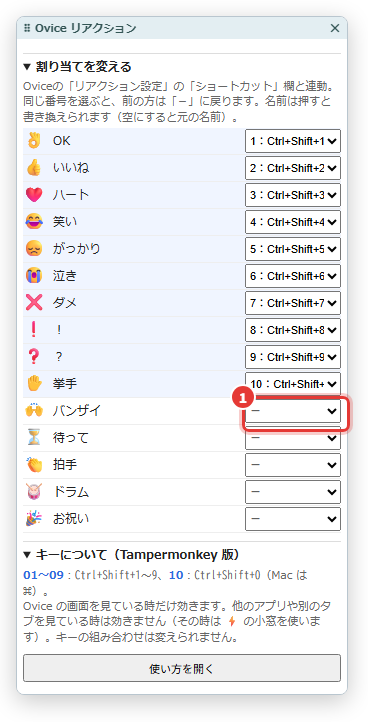
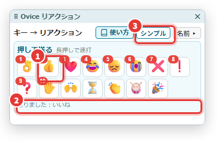
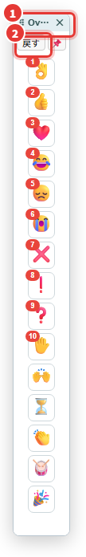
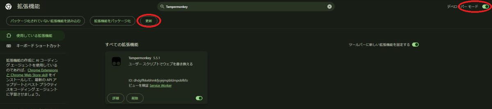

入れ方（5分）
Chrome の拡張機能「Tampermonkey（タンパーモンキー）」の上で動きます。パソコンの Chrome で進めてください。
- Tampermonkey を入れる
Chrome ウェブストアは、Chrome に機能を足す「拡張機能」を配っている Google の公式のお店です。
Chrome ウェブストアの Tampermonkey を開く
右上の青い「Chrome に追加」→「拡張機能を追加」を押します。もう入っている人は「Chrome から削除」と出ているので、次へ。
- Tampermonkey に「ユーザースクリプト」を許可する
Chrome のアドレス欄（画面の一番上の、URL が出ている所）にchrome://extensionsと打って Enter。拡張機能の一覧で、Tampermonkey の「詳細」を押します。
「ユーザー スクリプトを許可する」をオンにします。 この項目が無い古い Chrome の場合は、右上の「デベロッパー モード」をオンにします。
この項目が無い古い Chrome の場合は、右上の「デベロッパー モード」をオンにします。 - このツールを入れる
Ovice Quick Reactions をインストール
Tampermonkey の「ユーザー スクリプトのインストール」の画面が開くので、左下の「インストール」を押します。
右に「悪意があるスクリプトは…」と注意書きが出ますが、Tampermonkey がどのスクリプトでも出す決まりの文です。「作者」が遊牧民、「INCLUDE」が app.ovice.com/* なら本物です。 - Oviceを開き直す
Oviceのタブで、ブラウザの更新ボタン（アドレス欄の左の ↻。キーボードなら F5）を押します。画面の右端に青い ⚡ と緑の ⌨ のボタンが出て、キーとリアクションのパネルが開いたら完了です。
始める前に

- ChromeでOviceのスペースが開いている
- 右端の ⌨（写真の1）を押すと、キーとリアクションのパネルが開く・閉じる
- 右端の ⚡（写真の2）を押すと、常に手前に出る小窓が開く
パネルは上の帯（⠿ Ovice リアクション）をつかむと動かせます。置いた場所は次に開いた時も同じです。右上の 🐒 Tampermonkey のアイコンのメニューからも、パネルの開閉と使い方ページを開けます。
キーで送る
初めは1〜10番に、Oviceのリアクション列の左から順に割り当てられています。

- 1パネルの左の列がキー、右の列が送られるリアクションです例：Ctrl+Shift+2 で「いいね」が送られます。
- 2Oviceの画面で、そのキーを押す
- 画面下のリアクション列（😊）を閉じていても送れます。送る瞬間だけ開き、約1.5秒で元どおり閉じます
- チャット欄に文字を打っている途中でも、キーで送れます

割り当てを変える
やり方は3通りあります。どれで変えても同じ結果になります。
- 1対応表で、変えたい行のリアクションを押すその行の下に、選べるリアクションが並びます。
- 2並んだ中から、送りたいリアクションを押す（写真の1）
- 3そのキーを使わないなら「外す」を押す（写真の2）

- 1パネルの「割り当てを変える」を見る青い行が、キーに割り当て済みのリアクションです。
- 2リアクションの右の欄で、使いたい番号を選ぶ

⚡の小窓で送る
キーを覚えなくても、マウスで押して送れる小窓です。ExcelやPDFなど、ほかのアプリより常に手前に出ます。
- 1Oviceの画面の右端にある、青い⚡を押す
- 2小窓に並んだリアクションを押すと送られる長押しすると、約1秒に5回の速さで続けて送れます。
- 3アイコン左上の赤い数字が、割り当てたキーの番号です
パネルから押して送る
- 1パネルのいちばん上の「押して送る」に並んだリアクションを押す長押しすると、約1秒に5回の速さで続けて送れます。
- 2ボタンの下に「送りました：いいね」と出れば届いています
- 3右上の「シンプル」を押すと、送るボタンだけの細い表示になります

細い表示にする
- 1上の帯をつかんでドラッグすると、パネルが動きます
- 2「戻す」を押すと、対応表つきの表示に戻ります
- 選んだ表示と置いた場所は、次に開いた時も同じです
- 📌 を押すと、送るボタンが「常に手前の小窓」に移ります。小窓を閉じるとパネルに戻ります

キーについて
Tampermonkey 版のキーは決まっています。
Chrome 拡張機能版との違い
以前の Chrome 拡張機能版（Ovice Quick Reactions 1.6 まで）と比べて、次の点が違います。
| 拡張機能版 | Tampermonkey 版 |
|---|---|
| キーの範囲を「グローバル」にすると、ほかのアプリを見ていても効く | Oviceの画面を見ている時だけ効く |
| キーの組み合わせを chrome://extensions/shortcuts で変えられる | Ctrl+Shift+1〜9・0 に決まっている |
| 右のサイドパネル・細い別窓は、どのタブを見ていても使える | パネルはOviceの画面の中に浮かぶ（Oviceのタブを見ている時だけ見える） |
| 割り当ては同じGoogleアカウントのChrome同士で引き継がれる | そのパソコンの Tampermonkey の中だけに保存される |
困ったとき
よくある原因と、最初に試すことです。

⚡ と ⌨ のボタンが出ない
入れ方の②「ユーザー スクリプトを許可する」がオンか確かめて、Oviceの画面でブラウザの更新ボタン（↻）を押してください。Chrome 拡張機能版も入れている時は、そちらが先に動いています（Tampermonkey のメニューに「拡張版が動いているため休んでいます」と出ます）。
キーを押しても送られない
Oviceの画面を一度クリックしてから押してください。キーが効くのはOviceの画面を見ている時だけです。⚡ の小窓を前に出している時は、小窓のボタンを押して送ります。
「リアクションボタンが見つかりません」と出る
画面下のリアクション列（😊）を一度開いた状態で、もう一度押してください。
急に動かない・表示がおかしい
① chrome://extensions を開き、右上の「デベロッパー モード」をオン → 左上の「更新」を押す ② Oviceに戻ってブラウザの更新ボタン（↻）を押す。

会社のパソコンでスイッチが押せない
会社から配られたパソコンは、会社の管理者が Chrome の設定を決めていることがあります。「ユーザー スクリプトを許可する」やデベロッパー モードが押せない時は、そのパソコンでは使えません。勝手に変えようとせず、会社の管理者に相談してください。
自分には音が聞こえない
リアクションの音はOvice側の設定です。Oviceの ⚙ →「オーディオ設定」→「音量調整オプション」の「通知音」と、「リアクション設定」の効果音を確かめてください。
保存するもの・やめ方
- 保存するのは「何番にどのリアクションを割り当てたか」「リアクションに付けた名前」「表示の選び方とパネルの場所」だけ
- 保存先はそのパソコンの Tampermonkey の中です。ほかのパソコンとは自動でつながりません
- Oviceの会話や画面の中身を、外へ送ることはありません
- やめる時は、右上の 🐒 Tampermonkey のアイコン → このツールのスイッチをオフにするか、ダッシュボードから削除します